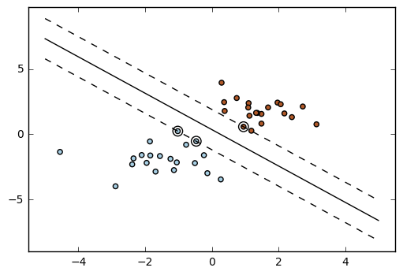

Support Vector Mechanics (SVM)
Introduction
from sklearn import svm
X = [[0, 0], [1, 1]]
y = [0, 1]
clf = svm.SVC()
Fit
clf.fit(X, y)
SVC(C=1.0, cache_size=200, class_weight=None, coef0=0.0, decision_function_shape='ovr', degree=3, gamma='auto', kernel='rbf', max_iter=-1, probability=False, random_state=None, shrinking=True, tol=0.001, verbose=False)
Predict
After being fitted, the model can then be used to predict new values:
clf.predict([[2., 2.]])
array([1])
SVMs decision function depends on some subset of the training data, called the support vectors. Some properties of these support vectors can be found in members support_vectors_, support_ and n_support:
Support vectors
clf.support_vectors_
array([[0., 0.],
[1., 1.]])
# get indices of support vectors clf.support_
array([0, 1], dtype=int32)
# get number of support vectors for each class clf.n_support_
array([1, 1], dtype=int32)
Examples:
Plot Iris SVM
1. Plot different SVM classifiers in the iris dataset (source)
Comparison of different linear SVM classifiers on a 2D projection of the iris dataset. We only consider the first 2 features of this dataset:
- Sepal length
- Sepal width
This example shows how to plot the decision surface for four SVM classifiers with different kernels.
The linear models LinearSVC() and SVC(kernel='linear') yield slightly
different decision boundaries. This can be a consequence of the following
differences:
-
LinearSVCminimizes the squared hinge loss whileSVCminimizes the regular hinge loss. -
LinearSVCuses the One-vs-All (also known as One-vs-Rest) multiclass reduction whileSVCuses the One-vs-One multiclass reduction.
Both linear models have linear decision boundaries (intersecting hyperplanes) while the non-linear kernel models (polynomial or Gaussian RBF) have more flexible non-linear decision boundaries with shapes that depend on the kind of kernel and its parameters.
.. NOTE:: while plotting the decision function of classifiers for toy 2D datasets can help get an intuitive understanding of their respective expressive power, be aware that those intuitions don't always generalize to more realistic high-dimensional problems.
%matplotlib inline
import numpy as np import matplotlib.pyplot as plt #=====model and data set ========== from sklearn import svm, datasets
Data Set
# import some data to play with iris = datasets.load_iris()
iris.data[0:10]
array([[5.1, 3.5, 1.4, 0.2],
[4.9, 3. , 1.4, 0.2],
[4.7, 3.2, 1.3, 0.2],
[4.6, 3.1, 1.5, 0.2],
[5. , 3.6, 1.4, 0.2],
[5.4, 3.9, 1.7, 0.4],
[4.6, 3.4, 1.4, 0.3],
[5. , 3.4, 1.5, 0.2],
[4.4, 2.9, 1.4, 0.2],
[4.9, 3.1, 1.5, 0.1]])
iris.target[0:10]
array([0, 0, 0, 0, 0, 0, 0, 0, 0, 0])
- We only take the first two features. We could avoid this ugly slicing by using a two-dim dataset
X = iris.data[:, :2] y = iris.target
Train the model
h = .02 # step size in the mesh
- We create an instance of SVM and fit out data. We do not scale our data since we want to plot the support vectors
C = 1.0 # SVM regularization parameter
svc = svm.SVC(kernel='linear', C=C).fit(X, y) rbf_svc = svm.SVC(kernel='rbf', gamma=0.7, C=C).fit(X, y) poly_svc = svm.SVC(kernel='poly', degree=3, C=C).fit(X, y) lin_svc = svm.LinearSVC(C=C).fit(X, y)
Plot
# create a mesh to plot in x_min, x_max = X[:, 0].min() - 1, X[:, 0].max() + 1 y_min, y_max = X[:, 1].min() - 1, X[:, 1].max() + 1 xx, yy = np.meshgrid(np.arange(x_min, x_max, h), np.arange(y_min, y_max, h)) plt.figure(figsize = [12,12]) # title for the plots titles = ['SVC with linear kernel', 'LinearSVC (linear kernel)', 'SVC with RBF kernel', 'SVC with polynomial (degree 3) kernel'] for i, clf in enumerate((svc, lin_svc, rbf_svc, poly_svc)): # Plot the decision boundary. For that, we will assign a color to each # point in the mesh [x_min, m_max]x[y_min, y_max]. plt.subplot(2, 2, i + 1) plt.subplots_adjust(wspace=0.4, hspace=0.4) Z = clf.predict(np.c_[xx.ravel(), yy.ravel()]) # Put the result into a color plot Z = Z.reshape(xx.shape) plt.contourf(xx, yy, Z, cmap=plt.cm.Paired, alpha=0.8) # Plot also the training points plt.scatter(X[:, 0], X[:, 1], c=y, cmap=plt.cm.Paired) plt.xlabel('Sepal length') plt.ylabel('Sepal width') plt.xlim(xx.min(), xx.max()) plt.ylim(yy.min(), yy.max()) plt.xticks(()) plt.yticks(()) plt.title(titles[i]) plt.show()
2. SVM with custom kernel (source)
Simple usage of Support Vector Machines to classify a sample. It will plot the decision surface and the support vectors.
import numpy as np import matplotlib.pyplot as plt from sklearn import svm, datasets
Data Set
# import some data to play with iris = datasets.load_iris() X = iris.data[:, :2] # we only take the first two features. We could # avoid this ugly slicing by using a two-dim dataset Y = iris.target
Define Kernel
def my_kernel(X, Y): """ We create a custom kernel: (2 0) k(X, Y) = X ( ) Y.T (0 1) """ M = np.array([[2, 0], [0, 1.0]]) return np.dot(np.dot(X, M), Y.T)
Fit the model
# we create an instance of SVM and fit out data. clf = svm.SVC(kernel=my_kernel) clf.fit(X, Y)
SVC(C=1.0, cache_size=200, class_weight=None, coef0=0.0, decision_function_shape='ovr', degree=3, gamma='auto', kernel=<function my_kernel at 0x7f3ae7845620>, max_iter=-1, probability=False, random_state=None, shrinking=True, tol=0.001, verbose=False)
Plot
h = .02 # step size in the mesh # Plot the decision boundary. For that, we will assign a color to each # point in the mesh [x_min, m_max]x[y_min, y_max]. x_min, x_max = X[:, 0].min() - 1, X[:, 0].max() + 1 y_min, y_max = X[:, 1].min() - 1, X[:, 1].max() + 1 xx, yy = np.meshgrid(np.arange(x_min, x_max, h), np.arange(y_min, y_max, h)) Z = clf.predict(np.c_[xx.ravel(), yy.ravel()]) # Put the result into a color plot Z = Z.reshape(xx.shape) plt.figure(figsize = [8,8]) plt.pcolormesh(xx, yy, Z, cmap=plt.cm.Paired) # Plot also the training points plt.scatter(X[:, 0], X[:, 1], c=Y, cmap=plt.cm.Paired) plt.title('3-Class classification using Support Vector Machine with custom' ' kernel') plt.axis('tight') plt.show()

3. One-class SVM with non-linear kernel (RBF) (source)
An example using a one-class SVM for novelty detection.
One-class SVM is an unsupervised algorithm that learns a decision function for novelty detection:
classifying new data as similar or different to the training set.
import numpy as np import matplotlib.pyplot as plt import matplotlib.font_manager from sklearn import svm
Generate train data
# Generate train data X = 0.3 * np.random.randn(100, 2) X_train = np.r_[X + 2, X - 2] # Generate some regular novel observations X = 0.3 * np.random.randn(20, 2) X_test = np.r_[X + 2, X - 2] # Generate some abnormal novel observations X_outliers = np.random.uniform(low=-4, high=4, size=(20, 2))
Fit the Model (sklearn.svm.OneClassSVM)
xx, yy = np.meshgrid(np.linspace(-5, 5, 500), np.linspace(-5, 5, 500)) # fit the model clf = svm.OneClassSVM(nu=0.1, kernel="rbf", gamma=0.1) clf.fit(X_train) #predict y_pred_train = clf.predict(X_train) y_pred_test = clf.predict(X_test) y_pred_outliers = clf.predict(X_outliers) #Error n_error_train = y_pred_train[y_pred_train == -1].size n_error_test = y_pred_test[y_pred_test == -1].size n_error_outliers = y_pred_outliers[y_pred_outliers == 1].size # plot the line, the points, and the nearest vectors to the plane Z = clf.decision_function(np.c_[xx.ravel(), yy.ravel()]) Z = Z.reshape(xx.shape)
Plot
plt.figure(figsize = [12,12]) plt.title("Novelty Detection") plt.contourf(xx, yy, Z, levels=np.linspace(Z.min(), 0, 7), cmap=plt.cm.PuBu) a = plt.contour(xx, yy, Z, levels=[0], linewidths=2, colors='darkred') plt.contourf(xx, yy, Z, levels=[0, Z.max()], colors='palevioletred') s = 40 b1 = plt.scatter(X_train[:, 0], X_train[:, 1], c='white', s=s) b2 = plt.scatter(X_test[:, 0], X_test[:, 1], c='blueviolet', s=s) c = plt.scatter(X_outliers[:, 0], X_outliers[:, 1], c='gold', s=s) plt.axis('tight') plt.xlim((-5, 5)) plt.ylim((-5, 5)) plt.legend([a.collections[0], b1, b2, c], ["learned frontier", "training observations", "new regular observations", "new abnormal observations"], loc="upper left", prop=matplotlib.font_manager.FontProperties(size=11)) plt.xlabel( "error train: %d/200 ; errors novel regular: %d/40 ; " "errors novel abnormal: %d/40" % (n_error_train, n_error_test, n_error_outliers)) plt.show()
4. RBF SVM parameters (source)
This example illustrates the effect of the parameters gamma and C of
the Radial Basis Function (RBF) kernel SVM.
-
Intuitively, the
gammaparameter defines how far the influence of a single training example reaches, with low values meaning 'far' and high values meaning 'close'. Thegammaparameters can be seen as the inverse of the radius of influence of samples selected by the model as support vectors. -
The
Cparameter trades off misclassification of training examples against simplicity of the decision surface. A lowCmakes the decision surface smooth, while a highCaims at classifying all training examples correctly by giving the model freedom to select more samples as support vectors. -
The first plot is a visualization of the decision function for a variety of parameter values on a simplified classification problem involving only 2 input features and 2 possible target classes (binary classification). Note that this kind of plot is not possible to do for problems with more features or target classes.
-
The second plot is a heatmap of the classifier's cross-validation accuracy as a function of
Candgamma. For this example we explore a relatively large grid for illustration purposes. In practice, a logarithmic grid from :math:10^{-3}to :math:10^3is usually sufficient. If the best parameters lie on the boundaries of the grid, it can be extended in that direction in a subsequent search. -
Note that the heat map plot has a special colorbar with a midpoint value close to the score values of the best performing models so as to make it easy to tell them appart in the blink of an eye.
-
The behavior of the model is very sensitive to the
gammaparameter. Ifgammais too large, the radius of the area of influence of the support vectors only includes the support vector itself and no amount of regularization withCwill be able to prevent overfitting. -
When
gammais very small, the model is too constrained and cannot capture the complexity or "shape" of the data. The region of influence of any selected support vector would include the whole training set. The resulting model will behave similarly to a linear model with a set of hyperplanes that separate the centers of high density of any pair of two classes. -
For intermediate values, we can see on the second plot that good models can be found on a diagonal of
Candgamma. Smooth models (lowergammavalues) can be made more complex by selecting a larger number of support vectors (largerCvalues) hence the diagonal of good performing models. -
Finally one can also observe that for some intermediate values of
gammawe get equally performing models whenCbecomes very large: it is not necessary to regularize by limiting the number of support vectors. The radius of the RBF kernel alone acts as a good structural regularizer. In practice though it might still be interesting to limit the number of support vectors with a lower value ofCso as to favor models that use less memory and that are faster to predict. -
We should also note that small differences in scores results from the random splits of the cross-validation procedure. Those spurious variations can be smoothed out by increasing the number of CV iterations
n_iterat the expense of compute time. Increasing the value number ofC_rangeandgamma_rangesteps will increase the resolution of the hyper-parameter heat map.
import numpy as np import matplotlib.pyplot as plt from matplotlib.colors import Normalize #======== preprocessing ========== from sklearn.preprocessing import StandardScaler #===models===================== from sklearn.svm import SVC from sklearn.cross_validation import StratifiedShuffleSplit from sklearn.model_selection import GridSearchCV #======== data ========================== from sklearn.datasets import load_iris
- Utility function to move the midpoint of a colormap to be around the values of interest.
class MidpointNormalize(Normalize): def __init__(self, vmin=None, vmax=None, midpoint=None, clip=False): self.midpoint = midpoint Normalize.__init__(self, vmin, vmax, clip) def __call__(self, value, clip=None): x, y = [self.vmin, self.midpoint, self.vmax], [0, 0.5, 1] return np.ma.masked_array(np.interp(value, x, y))
- Load and prepare data set dataset for grid search
iris = load_iris() X = iris.data y = iris.target
- Dataset for decision function visualization: we only keep the first two features in X and sub-sample the dataset to keep only 2 classes and make it a binary classification problem.
X_2d = X[:, :2] X_2d = X_2d[y > 0] y_2d = y[y > 0] y_2d -= 1
- It is usually a good idea to scale the data for SVM training. We are cheating a bit in this example in scaling all of the data, instead of fitting the transformation on the training set and just applying it on the test set.
scaler = StandardScaler() X = scaler.fit_transform(X) X_2d = scaler.fit_transform(X_2d)
- Train classifiers, For an initial search, a logarithmic grid with basis 10 is often helpful. Using a basis of 2, a finer tuning can be achieved but at a much higher cost.
C_range = np.logspace(-2, 10, 13) gamma_range = np.logspace(-9, 3, 13) param_grid = dict(gamma=gamma_range, C=C_range) cv = StratifiedShuffleSplit(n_splits=5, test_size=0.2, random_state=42) grid = GridSearchCV(SVC(), param_grid=param_grid, cv=cv) grid.fit(X, y) print("The best parameters are %s with a score of %0.2f" % (grid.best_params_, grid.best_score_))
- Now we need to fit a classifier for all parameters in the 2d version (we use a smaller set of parameters here because it takes a while to train)
C_2d_range = [1e-2, 1, 1e2] gamma_2d_range = [1e-1, 1, 1e1] classifiers = [] for C in C_2d_range: for gamma in gamma_2d_range: clf = SVC(C=C, gamma=gamma) clf.fit(X_2d, y_2d) classifiers.append((C, gamma, clf))
- visualization
draw visualization of parameter effects
plt.figure(figsize=(8, 6)) xx, yy = np.meshgrid(np.linspace(-3, 3, 200), np.linspace(-3, 3, 200)) for (k, (C, gamma, clf)) in enumerate(classifiers): # evaluate decision function in a grid Z = clf.decision_function(np.c_[xx.ravel(), yy.ravel()]) Z = Z.reshape(xx.shape) # visualize decision function for these parameters plt.subplot(len(C_2d_range), len(gamma_2d_range), k + 1) plt.title("gamma=10^%d, C=10^%d" % (np.log10(gamma), np.log10(C)), size='medium') # visualize parameter's effect on decision function plt.pcolormesh(xx, yy, -Z, cmap=plt.cm.RdBu) plt.scatter(X_2d[:, 0], X_2d[:, 1], c=y_2d, cmap=plt.cm.RdBu_r) plt.xticks(()) plt.yticks(()) plt.axis('tight') # plot the scores of the grid # grid_scores_ contains parameter settings and scores # We extract just the scores scores = [x[1] for x in grid.grid_scores_] scores = np.array(scores).reshape(len(C_range), len(gamma_range)) # Draw heatmap of the validation accuracy as a function of gamma and C # # The score are encoded as colors with the hot colormap which varies from dark # red to bright yellow. As the most interesting scores are all located in the # 0.92 to 0.97 range we use a custom normalizer to set the mid-point to 0.92 so # as to make it easier to visualize the small variations of score values in the # interesting range while not brutally collapsing all the low score values to # the same color. plt.figure(figsize=(8, 6)) plt.subplots_adjust(left=.2, right=0.95, bottom=0.15, top=0.95) plt.imshow(scores, interpolation='nearest', cmap=plt.cm.hot, norm=MidpointNormalize(vmin=0.2, midpoint=0.92)) plt.xlabel('gamma') plt.ylabel('C') plt.colorbar() plt.xticks(np.arange(len(gamma_range)), gamma_range, rotation=45) plt.yticks(np.arange(len(C_range)), C_range) plt.title('Validation accuracy') plt.show()
5. SVM: Separating hyperplane for unbalanced classes (source)
Find the optimal separating hyperplane using an SVC for classes that are unbalanced.
We first find the separating plane with a plain SVC and then plot (dashed) the separating hyperplane with automatically correction for unbalanced classes.
This example will also work by replacing SVC(kernel="linear")
with SGDClassifier(loss="hinge"). Setting the loss parameter
of the :class:SGDClassifier equal to hinge will yield behaviour
such as that of a SVC with a linear kernel.
For example try instead of the SVC::
clf = SGDClassifier(n_iter=100, alpha=0.01)
import numpy as np import matplotlib.pyplot as plt from sklearn import svm from sklearn.linear_model import SGDClassifier
Data
# we create 40 separable points rng = np.random.RandomState(0) n_samples_1 = 1000 n_samples_2 = 100 X = np.r_[1.5 * rng.randn(n_samples_1, 2), 0.5 * rng.randn(n_samples_2, 2) + [2, 2]] y = [0] * (n_samples_1) + [1] * (n_samples_2)
Model
# fit the model and get the separating hyperplane clf = svm.SVC(kernel='linear', C=1.0) clf.fit(X, y) w = clf.coef_[0] a = -w[0] / w[1] xx = np.linspace(-5, 5) yy = a * xx - clf.intercept_[0] / w[1]
Get the separating hyperplane using weighted classes
# get the separating hyperplane using weighted classes wclf = svm.SVC(kernel='linear', class_weight={1: 10}) wclf.fit(X, y) ww = wclf.coef_[0] wa = -ww[0] / ww[1] wyy = wa * xx - wclf.intercept_[0] / ww[1]
Plot
# plot separating hyperplanes and samples h0 = plt.plot(xx, yy, 'k-', label='no weights') h1 = plt.plot(xx, wyy, 'k--', label='with weights') plt.scatter(X[:, 0], X[:, 1], c=y, cmap=plt.cm.Paired) plt.legend() plt.axis('tight') plt.show()
6. SVM: Maximum margin separating hyperplane (source)
Plot the maximum margin separating hyperplane within a two-class separable dataset using a Support Vector Machine classifier with linear kernel.
import numpy as np import matplotlib.pyplot as plt from sklearn import svm
- data
# we create 40 separable points np.random.seed(0) X = np.r_[np.random.randn(20, 2) - [2, 2], np.random.randn(20, 2) + [2, 2]] Y = [0] * 20 + [1] * 20
- Model
# fit the model clf = svm.SVC(kernel='linear') clf.fit(X, Y) # get the separating hyperplane w = clf.coef_[0] a = -w[0] / w[1] xx = np.linspace(-5, 5) yy = a * xx - (clf.intercept_[0]) / w[1]
- Separating hyperplane
# plot the parallels to the separating hyperplane that pass through the # support vectors b = clf.support_vectors_[0] yy_down = a * xx + (b[1] - a * b[0]) b = clf.support_vectors_[-1] yy_up = a * xx + (b[1] - a * b[0])
- Plot
# plot the line, the points, and the nearest vectors to the plane plt.plot(xx, yy, 'k-') plt.plot(xx, yy_down, 'k--') plt.plot(xx, yy_up, 'k--') plt.scatter(clf.support_vectors_[:, 0], clf.support_vectors_[:, 1], s=80, facecolors='none') plt.scatter(X[:, 0], X[:, 1], c=Y, cmap=plt.cm.Paired) plt.axis('tight') plt.show()

7. SVM-Anova: SVM with univariate feature selection (source)
This example shows how to perform univariate feature selection before running a SVC (support vector classifier) to improve the classification scores.
import numpy as np import matplotlib.pyplot as plt from sklearn import svm, datasets, feature_selection from sklearn.cross_validation import cross_val_score from sklearn.pipeline import Pipeline
- Data
# Import some data to play with digits = datasets.load_digits() y = digits.target # Throw away data, to be in the curse of dimension settings y = y[:200] X = digits.data[:200] n_samples = len(y) X = X.reshape((n_samples, -1)) # add 200 non-informative features X = np.hstack((X, 2 * np.random.random((n_samples, 200))))
- Feature-selection transform
# Create a feature-selection transform and transform = feature_selection.SelectPercentile(feature_selection.f_classif)
- instance of SVM
# Instance of SVM that we combine together to have an full-blown estimator clf = Pipeline([('anova', transform), ('svc', svm.SVC(C=1.0))])
- cross-validation score as a function of percentile of features
#the cross-validation score as a function of percentile of features score_means = list() score_stds = list() percentiles = (1, 3, 6, 10, 15, 20, 30, 40, 60, 80, 100) for percentile in percentiles: clf.set_params(anova__percentile=percentile) # Compute cross-validation score using 1 CPU this_scores = cross_val_score(clf, X, y, n_jobs=1) score_means.append(this_scores.mean()) score_stds.append(this_scores.std())
- Plot
plt.errorbar(percentiles, score_means, np.array(score_stds)) plt.title( 'Performance of the SVM-Anova varying the percentile of features selected') plt.xlabel('Percentile') plt.ylabel('Prediction rate') plt.axis('tight') plt.show()

8. SVM-Kernels (source)
Three different types of SVM-Kernels are displayed below. The polynomial and RBF are especially useful when the data-points are not linearly separable.
import numpy as np import matplotlib.pyplot as plt from sklearn import svm
- Data
# Our dataset and targets X = np.c_[(.4, -.7), (-1.5, -1), (-1.4, -.9), (-1.3, -1.2), (-1.1, -.2), (-1.2, -.4), (-.5, 1.2), (-1.5, 2.1), (1, 1), # -- (1.3, .8), (1.2, .5), (.2, -2), (.5, -2.4), (.2, -2.3), (0, -2.7), (1.3, 2.1)].T Y = [0] * 8 + [1] * 8
- plot
# figure number fignum = 1 # fit the model for kernel in ('linear', 'poly', 'rbf'): clf = svm.SVC(kernel=kernel, gamma=2) clf.fit(X, Y) # plot the line, the points, and the nearest vectors to the plane plt.figure(fignum, figsize=(4, 3)) plt.clf() plt.scatter(clf.support_vectors_[:, 0], clf.support_vectors_[:, 1], s=80, facecolors='none', zorder=10) plt.scatter(X[:, 0], X[:, 1], c=Y, zorder=10, cmap=plt.cm.Paired) plt.axis('tight') x_min = -3 x_max = 3 y_min = -3 y_max = 3 XX, YY = np.mgrid[x_min:x_max:200j, y_min:y_max:200j] Z = clf.decision_function(np.c_[XX.ravel(), YY.ravel()]) # Put the result into a color plot Z = Z.reshape(XX.shape) plt.figure(fignum, figsize=(4, 3)) plt.pcolormesh(XX, YY, Z > 0, cmap=plt.cm.Paired) plt.contour(XX, YY, Z, colors=['k', 'k', 'k'], linestyles=['--', '-', '--'], levels=[-.5, 0, .5]) plt.xlim(x_min, x_max) plt.ylim(y_min, y_max) plt.xticks(()) plt.yticks(()) fignum = fignum + 1 plt.show()


9. SVM Margins Example (source)
The plots below illustrate the effect the parameter C has
on the separation line. A large value of C basically tells
our model that we do not have that much faith in our data's
distribution, and will only consider points close to line
of separation.
A small value of C includes more/all the observations, allowing
the margins to be calculated using all the data in the area.
import numpy as np import matplotlib.pyplot as plt from sklearn import svm
- Data
# we create 40 separable points np.random.seed(0) X = np.r_[np.random.randn(20, 2) - [2, 2], np.random.randn(20, 2) + [2, 2]] Y = [0] * 20 + [1] * 20
- Plot
# figure number fignum = 1 # fit the model for name, penalty in (('unreg', 1), ('reg', 0.05)): clf = svm.SVC(kernel='linear', C=penalty) clf.fit(X, Y) # get the separating hyperplane w = clf.coef_[0] a = -w[0] / w[1] xx = np.linspace(-5, 5) yy = a * xx - (clf.intercept_[0]) / w[1] # plot the parallels to the separating hyperplane that pass through the # support vectors margin = 1 / np.sqrt(np.sum(clf.coef_ ** 2)) yy_down = yy + a * margin yy_up = yy - a * margin # plot the line, the points, and the nearest vectors to the plane plt.figure(fignum, figsize=(4, 3)) plt.clf() plt.plot(xx, yy, 'k-') plt.plot(xx, yy_down, 'k--') plt.plot(xx, yy_up, 'k--') plt.scatter(clf.support_vectors_[:, 0], clf.support_vectors_[:, 1], s=80, facecolors='none', zorder=10) plt.scatter(X[:, 0], X[:, 1], c=Y, zorder=10, cmap=plt.cm.Paired) plt.axis('tight') x_min = -4.8 x_max = 4.2 y_min = -6 y_max = 6 XX, YY = np.mgrid[x_min:x_max:200j, y_min:y_max:200j] Z = clf.predict(np.c_[XX.ravel(), YY.ravel()]) # Put the result into a color plot Z = Z.reshape(XX.shape) plt.figure(fignum, figsize=(4, 3)) plt.pcolormesh(XX, YY, Z, cmap=plt.cm.Paired) plt.xlim(x_min, x_max) plt.ylim(y_min, y_max) plt.xticks(()) plt.yticks(()) fignum = fignum + 1 plt.show()

10. Non-linear SVM (source)
Perform binary classification using non-linear SVC with RBF kernel. The target to predict is a XOR of the inputs.
The color map illustrates the decision function learned by the SVC.
import numpy as np import matplotlib.pyplot as plt from sklearn import svm
- Data
xx, yy = np.meshgrid(np.linspace(-3, 3, 500), np.linspace(-3, 3, 500)) np.random.seed(0) X = np.random.randn(300, 2) Y = np.logical_xor(X[:, 0] > 0, X[:, 1] > 0)
- Model
# fit the model clf = svm.NuSVC() clf.fit(X, Y) # plot the decision function for each datapoint on the grid Z = clf.decision_function(np.c_[xx.ravel(), yy.ravel()]) Z = Z.reshape(xx.shape)
- Plot
plt.imshow(Z, interpolation='nearest', extent=(xx.min(), xx.max(), yy.min(), yy.max()), aspect='auto', origin='lower', cmap=plt.cm.PuOr_r) contours = plt.contour(xx, yy, Z, levels=[0], linewidths=2, linetypes='--') plt.scatter(X[:, 0], X[:, 1], s=30, c=Y, cmap=plt.cm.Paired) plt.xticks(()) plt.yticks(()) plt.axis([-3, 3, -3, 3]) plt.show()
11. Support Vector Regression (SVR) using linear and non-linear kernels (source)
Toy example of 1D regression using linear, polynomial and RBF kernels.
import numpy as np from sklearn.svm import SVR import matplotlib.pyplot as plt
- Data
# Generate sample data X = np.sort(5 * np.random.rand(40, 1), axis=0) y = np.sin(X).ravel() # Add noise to targets y[::5] += 3 * (0.5 - np.random.rand(8))
- Model
# Fit regression model svr_rbf = SVR(kernel='rbf', C=1e3, gamma=0.1) svr_lin = SVR(kernel='linear', C=1e3) svr_poly = SVR(kernel='poly', C=1e3, degree=2) y_rbf = svr_rbf.fit(X, y).predict(X) y_lin = svr_lin.fit(X, y).predict(X) y_poly = svr_poly.fit(X, y).predict(X)
- Plot
# look at the results lw = 2 plt.scatter(X, y, color='darkorange', label='data') plt.hold('on') plt.plot(X, y_rbf, color='navy', lw=lw, label='RBF model') plt.plot(X, y_lin, color='c', lw=lw, label='Linear model') plt.plot(X, y_poly, color='cornflowerblue', lw=lw, label='Polynomial model') plt.xlabel('data') plt.ylabel('target') plt.title('Support Vector Regression') plt.legend() plt.show()

13. Scaling the regularization parameter for SVCs (source)
The following example illustrates the effect of scaling the
regularization parameter when using :ref:svm for classification.
For SVC classification, we are interested in a risk minimization for the
equation:
$ C \sum_{i=1, n} \mathcal{L} (f(x_i), y_i) + \Omega (w)$
where
- `C` is used to set the amount of regularization
- `\mathcal{L}` is a `loss` function of our samples
and our model parameters.
- `\Omega` is a `penalty` function of our model parameters
If we consider the loss function to be the individual error per sample, then the data-fit term, or the sum of the error for each sample, will increase as we add more samples. The penalization term, however, will not increase.
When using, for example, :ref:cross validation <cross_validation>, to
set the amount of regularization with C, there will be a
different amount of samples between the main problem and the smaller problems
within the folds of the cross validation.
Since our loss function is dependent on the amount of samples, the latter
will influence the selected value of C.
The question that arises is How do we optimally adjust C to
account for the different amount of training samples?
The figures below are used to illustrate the effect of scaling our
C to compensate for the change in the number of samples, in the
case of using an l1 penalty, as well as the l2 penalty.
l1-penalty case
In the l1 case, theory says that prediction consistency
(i.e. that under given hypothesis, the estimator
learned predicts as well as a model knowing the true distribution)
is not possible because of the bias of the l1. It does say, however,
that model consistency, in terms of finding the right set of non-zero
parameters as well as their signs, can be achieved by scaling
C1.
l2-penalty case
The theory says that in order to achieve prediction consistency, the penalty parameter should be kept constant as the number of samples grow.
Simulations
The two figures below plot the values of C on the x-axis and the
corresponding cross-validation scores on the y-axis, for several different
fractions of a generated data-set.
In the l1 penalty case, the cross-validation-error correlates best with
the test-error, when scaling our C with the number of samples, n,
which can be seen in the first figure.
For the l2 penalty case, the best result comes from the case where C
is not scaled.
Two separate datasets are used for the two different plots. The reason behind this is the `l1` case works better on sparse data, while `l2` is better suited to the non-sparse case.
import numpy as np import matplotlib.pyplot as plt from sklearn.svm import LinearSVC from sklearn.model_selection import ShuffleSplit from sklearn.model_selection import GridSearchCV from sklearn.utils import check_random_state from sklearn import datasets
- Data,Model,Plot
rnd = check_random_state(1) # set up dataset n_samples = 100 n_features = 300 # l1 data (only 5 informative features) X_1, y_1 = datasets.make_classification(n_samples=n_samples, n_features=n_features, n_informative=5, random_state=1) # l2 data: non sparse, but less features y_2 = np.sign(.5 - rnd.rand(n_samples)) X_2 = rnd.randn(n_samples, n_features / 5) + y_2[:, np.newaxis] X_2 += 5 * rnd.randn(n_samples, n_features / 5) clf_sets = [(LinearSVC(penalty='l1', loss='squared_hinge', dual=False, tol=1e-3), np.logspace(-2.3, -1.3, 10), X_1, y_1), (LinearSVC(penalty='l2', loss='squared_hinge', dual=True, tol=1e-4), np.logspace(-4.5, -2, 10), X_2, y_2)] colors = ['navy', 'cyan', 'darkorange'] lw = 2 for fignum, (clf, cs, X, y) in enumerate(clf_sets): # set up the plot for each regressor plt.figure(fignum, figsize=(9, 10)) for k, train_size in enumerate(np.linspace(0.3, 0.7, 3)[::-1]): param_grid = dict(C=cs) # To get nice curve, we need a large number of iterations to # reduce the variance grid = GridSearchCV(clf, refit=False, param_grid=param_grid, cv=ShuffleSplit(train_size=train_size, n_iter=250, random_state=1)) grid.fit(X, y) scores = [x[1] for x in grid.grid_scores_] scales = [(1, 'No scaling'), ((n_samples * train_size), '1/n_samples'), ] for subplotnum, (scaler, name) in enumerate(scales): plt.subplot(2, 1, subplotnum + 1) plt.xlabel('C') plt.ylabel('CV Score') grid_cs = cs * float(scaler) # scale the C's plt.semilogx(grid_cs, scores, label="fraction %.2f" % train_size, color=colors[k], lw=lw) plt.title('scaling=%s, penalty=%s, loss=%s' % (name, clf.penalty, clf.loss)) plt.legend(loc="best") plt.show()
14. SVM: Weighted samples (source)
Plot decision function of a weighted dataset, where the size of points is proportional to its weight.
The sample weighting rescales the C parameter, which means that the classifier puts more emphasis on getting these points right. The effect might often be subtle. To emphasize the effect here, we particularly weight outliers, making the deformation of the decision boundary very visible.
import numpy as np import matplotlib.pyplot as plt from sklearn import svm
def plot_decision_function(classifier, sample_weight, axis, title): # plot the decision function xx, yy = np.meshgrid(np.linspace(-4, 5, 500), np.linspace(-4, 5, 500)) Z = classifier.decision_function(np.c_[xx.ravel(), yy.ravel()]) Z = Z.reshape(xx.shape) # plot the line, the points, and the nearest vectors to the plane axis.contourf(xx, yy, Z, alpha=0.75, cmap=plt.cm.bone) axis.scatter(X[:, 0], X[:, 1], c=y, s=100 * sample_weight, alpha=0.9, cmap=plt.cm.bone) axis.axis('off') axis.set_title(title)
- Data
# we create 20 points np.random.seed(0) X = np.r_[np.random.randn(10, 2) + [1, 1], np.random.randn(10, 2)] y = [1] * 10 + [-1] * 10 sample_weight_last_ten = abs(np.random.randn(len(X))) sample_weight_constant = np.ones(len(X)) # and bigger weights to some outliers sample_weight_last_ten[15:] *= 5 sample_weight_last_ten[9] *= 15
- Model
# for reference, first fit without class weights # fit the model clf_weights = svm.SVC() clf_weights.fit(X, y, sample_weight=sample_weight_last_ten) clf_no_weights = svm.SVC() clf_no_weights.fit(X, y)
SVC(C=1.0, cache_size=200, class_weight=None, coef0=0.0, decision_function_shape=None, degree=3, gamma='auto', kernel='rbf', max_iter=-1, probability=False, random_state=None, shrinking=True, tol=0.001, verbose=False)
- Plot
fig, axes = plt.subplots(1, 2, figsize=(14, 6)) plot_decision_function(clf_no_weights, sample_weight_constant, axes[0], "Constant weights") plot_decision_function(clf_weights, sample_weight_last_ten, axes[1], "Modified weights") plt.show()
<matplotlib.figure.Figure at 0x114969e80>